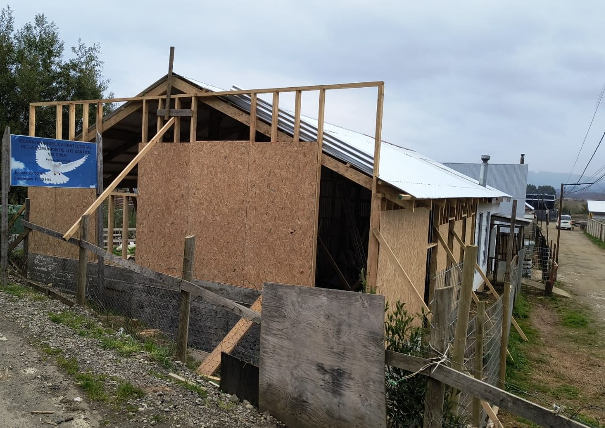
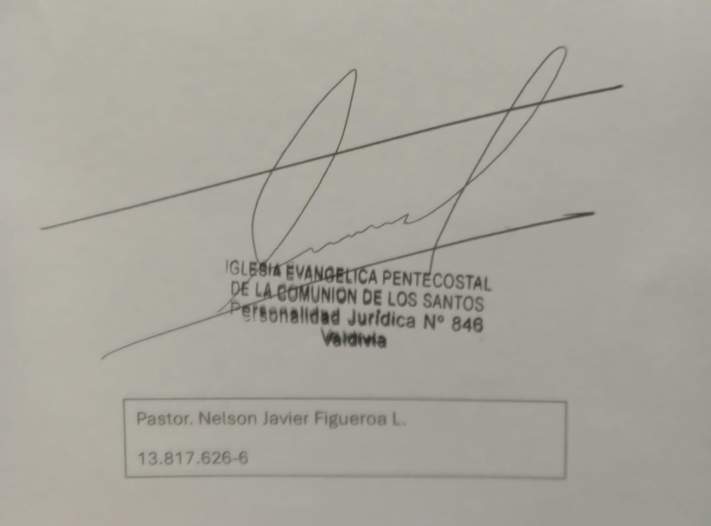

Solicitud de ofrenda para avance de la obra
Estimados/as pastores, hermanos y hermanas en Cristo,
Por medio de la presente, la iglesia de Valdivia, les saluda cariñosamente en el amor de Dios a cada uno de ustedes. Con la ayuda de nuestro Señor hemos comenzado la ampliación de nuestra iglesia. Sin embargo, nos hacen falta fondos para poder continuar con lo que nos queda. El Señor nos dice en Isaías 46:4 Aún en la vejez, cuando ya peinen canas, yo seré el mismo, yo los sostendré. Yo los hice y cuidaré de ustedes; los sostendré y los libraré. Por lo tanto, confiamos ardientemente en la fe de que saldremos adelante y el poderoso gigante proveerá lo que es necesario para el avance de su obra.
En vista de esta necesidad solicitamos respetuosamente de su ofrenda de amor. Para de esta forma seguir avanzando junto a nuestros hermanos en la construcción de nuestro templo. Agradecemos de antemano sus oraciones principalmente y cada una de sus cooperaciones. ¡Dios les sea bendiciendo en gran manera!
Fecha límite para envío de ofrendas: 15 Octubre 2024
A continuación, se detallan los datos bancarios para realizar el depósito:
Banco: Banco Estado
Cuenta Ahorro: 72163995108
RUT: 13.817.626-6
Nombre del Titular: Nelson Figueroa
Para su conveniencia, puede acceder directamente a las aplicaciones de Banco Estado desde los siguientes enlaces:
Agradecemos nuevamente su apoyo. No dude en ponerse en contacto con nosotros si tiene alguna pregunta o necesita más información.
Pd: Es necesario que envie el comprobante de transferencia al
para poder llevar una cuenta transparente de las ofrendas.
Atentamente,

Iglesia Evangélica Pentecostal de la Comunión de los Santos Valdivia